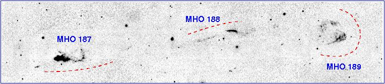

Only objects associated with outflows from young stars (Young Stellar Objects and protostars) are included in this catalogue. We do not list outflows from evolved stars (AGB stars or Proto-Planetary Nebulae) or extra-galactic sources. Also, objects should be spatially resolved; unresolved emission-line regions associated with an accretion disk or the base of an outflow (that were observed spectroscopically) are not listed.
Since large-scale imaging surveys are now revealing hundreds of objects in some regions, spectroscopic confirmation of every feature is not practical. However, narrow-band molecular hydrogen images must be accompanied with either adjacent narrow-band continuum images or (scaled) broad-band images, so that MHOs may be distinguished from wisps and knots of continuum emission. Morphology alone should not be used to identify MHOs, although an objects "shape" may be used to distinguish features in outflows from fluorescently excited nebulae. If available, MHOs should also have a spectrum consistent with thermal (shock) excitation, rather than non-thermal (fluorescent) excitation.
MHOs should be identified in the near-infrared (1-2.5 micron) lines of molecular hydrogen. Objects detected only in other near-IR lines (e.g. [FeII]) are not included. At the present time we are also excluding objects observed only in the UV or mid-infrared (e.g. with the Spitzer Space Telescope). Obviously, if an object is subsequently detected in molecular hydrogen emission in the near-IR, it should be included in the MHO catalogue.
WHEREVER POSSIBLE, WHOLE OUTFLOWS SHOULD BE GIVEN A SINGLE MHO NUMBER. In some cases the two lobes of a bipolar outflow could be given two consecutive numbers, as is sometimes the case with HH objects (e.g. HH 1/2). If it is not clear that widely-spaced objects are associated with the same outflow, separate MHO numbers could be given to each feature; MHO 187-189, shown below, is such an example. Multiple compact knots within the same outflow should not be given separate MHO numbers. Instead, if labeling these sub-features is desirable, letters should be used; if further granularity is needed, sub-knots should be labeled with letters and numbers. Detailed studies of many HH objects have used this scheme: HH 2, for example, is split into HH 2A, HH 2B, HH 2C, etc.; some authors have devided these knots further, into sub-knots HH 2A1, HH 2A2, etc.
For examples of MHO labeling, see the overview plots of NGC 2264-IRS2 in Monoceros , OMC-1 in Orion A , and, for a particularly complex region, AFGL 961 .
Finally, for completeness we have also given a catalogue number to many well-know HH objects (e.g. HH 1/2 = MHO 120/125, HH 212 = MHO 499), though only if these are detected in the near-IR lines of H2. Whenever possible, we group features together in a manner consistent with the HH object catalogue.

{kind=link}
{kind=link}
{kind=link}